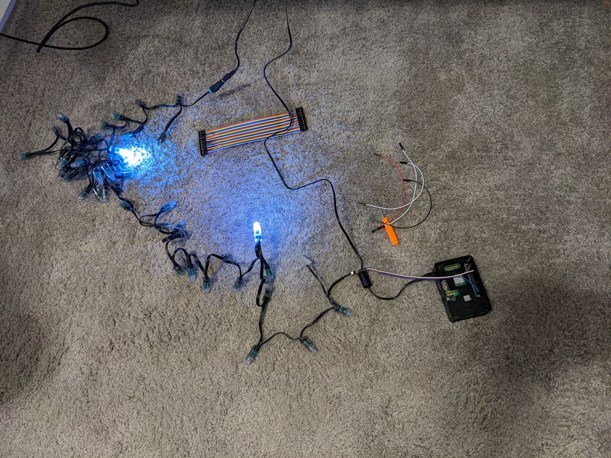
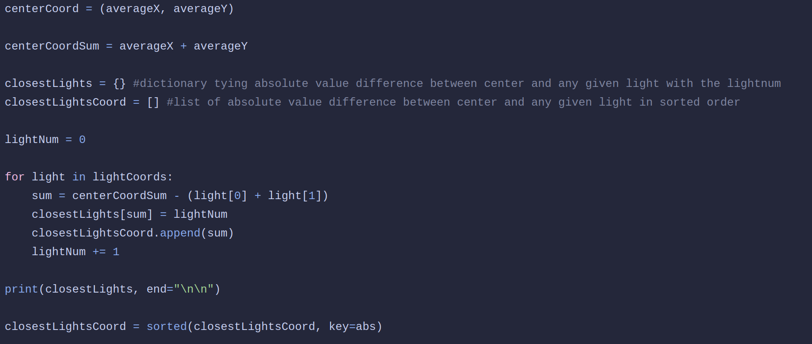
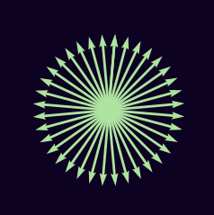
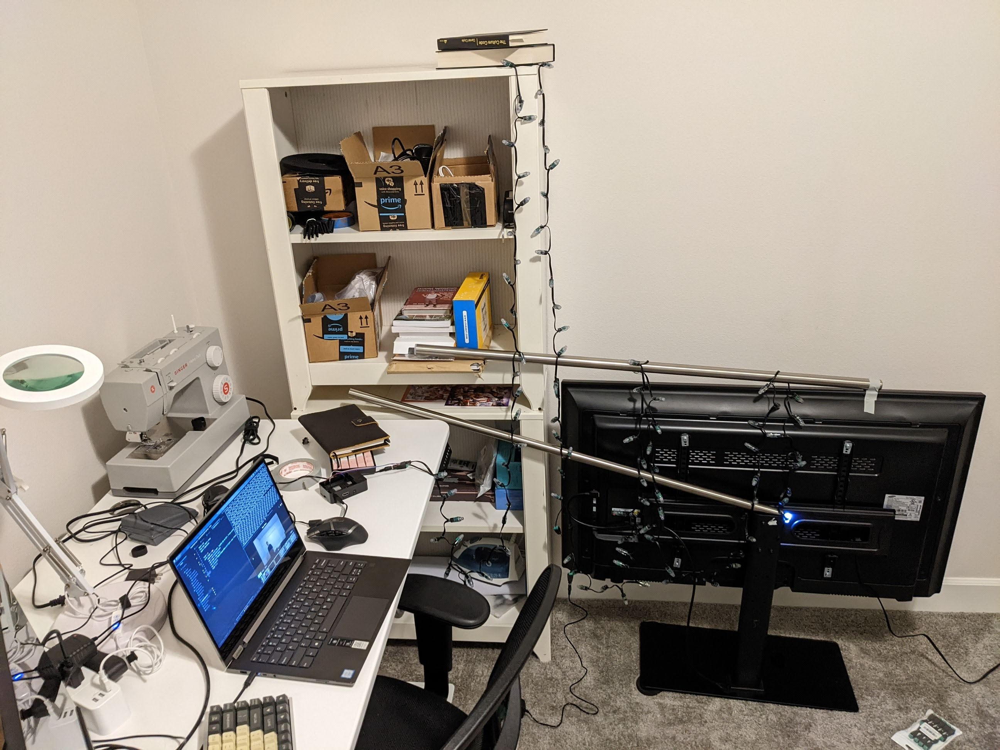

Around December of 2021, I found a video about controlling LEDs
in 3D space for a Christmas tree. It was absolutely fascinating
and I knew immediately that I wanted to do it myself. There was
one small issue though, the video was not technical in the
slightest. It was heavily based around what the general process
was but it was not a guide for how to set up the LEDs, how
program them, or really HOW to do anything. For those
interested, the link to the video is
here.
Being a programming novice who was painfully aware of how new I
was to the field, I left the project for better days.
In the beginning
I Found a Video
The Better Days
One day in July of 2022, the Google algorithm gods looked down
upon me and said "now's as good a time as any" and a video popped
into my YouTube feed. It was pretty unassuming, just a guide on
how to wire some WS2811 LEDs. I watched the video and came to
the realization that, I knew how to start!
Now of course, I did know a good way to start the project, as it semi-prominently featured in the video I watched initially regarding Christmas trees, but more importantly, I knew how to write the code.
And so my journey began.
Now of course, I did know a good way to start the project, as it semi-prominently featured in the video I watched initially regarding Christmas trees, but more importantly, I knew how to write the code.
And so my journey began.
The Setup

This is where the images start but there was an intense electrical debugging session that occured before I came close to this point, so that is what I will walk you through.
There had been some lights and a Raspberry Pi 3b hanging around my house for a while so those were the first things I got, following the video I was recommended, I tried to wire the LEDs up. The tutorial, however useful, was not helpful for my set of lights. I got the basic prinicple of how to get the adapters on but there was a lot of omitted information about what pins to use on the Raspberry Pi, or which end was negative, or which end took in data and which end outputted data. It took a bit of work, but I got the idea of how to match what pin on the Pi to to what area on the lights. I then came to the realization that the pins I needed were not magically in a row and I would need some jumper cables to carry the current between the lights and the Pi.
Fast forward 2 days and I now have the Pi wired correctly, or so I thought. I had confused the notation GPIO 18, thinking it meant PHYSICAL pin 18, it did not. After getting the wiring correct (I was able to tell by the lights flashing once when I plugged them in).
I wrote some code.
There had been some lights and a Raspberry Pi 3b hanging around my house for a while so those were the first things I got, following the video I was recommended, I tried to wire the LEDs up. The tutorial, however useful, was not helpful for my set of lights. I got the basic prinicple of how to get the adapters on but there was a lot of omitted information about what pins to use on the Raspberry Pi, or which end was negative, or which end took in data and which end outputted data. It took a bit of work, but I got the idea of how to match what pin on the Pi to to what area on the lights. I then came to the realization that the pins I needed were not magically in a row and I would need some jumper cables to carry the current between the lights and the Pi.
Fast forward 2 days and I now have the Pi wired correctly, or so I thought. I had confused the notation GPIO 18, thinking it meant PHYSICAL pin 18, it did not. After getting the wiring correct (I was able to tell by the lights flashing once when I plugged them in).
I wrote some code.
I don't have the exact code I wrote to do what it being done in the image above, but after poking around to figure out how the Neopixel library worked, I wrote some very simple stuff. Next to this is the first code I wrote that I have on record.
This is relatively simple compared to what you might have to endure later, and the basic idea is the I am testing the refresh rate of the lights. From this is was able to understand that 50 lights can refresh at 189 hertz. That is faster than most gaming monitors.
I also learned that the main thing that slows the lights updating was the .show() function (forshadowing). There is also some speed loss when using random numbere generation like I did here, but it is only a couple of seconds and since all my later tests are on the same scale, it can be disregarded.
This is relatively simple compared to what you might have to endure later, and the basic idea is the I am testing the refresh rate of the lights. From this is was able to understand that 50 lights can refresh at 189 hertz. That is faster than most gaming monitors.
I also learned that the main thing that slows the lights updating was the .show() function (forshadowing). There is also some speed loss when using random numbere generation like I did here, but it is only a couple of seconds and since all my later tests are on the same scale, it can be disregarded.

At this point it is important to note how the code is being executed. All of the code I had written was executing on the Raspberry Pi. This is because the only way to control the lights is through the PWM pins on the Pi.
Because all the code is being executed on the Pi, all of the calculations necessary to run the program are also being done on the Pi, and the Pi is significantly slower than my, or anybody's, laptop or computer. This becomes a problem later.
Also included in my verion control is some prototypical code for capturing images of the lights, this code is iterated on frequently and is extremely important as the project progresses.
Another piece of ineffiency to mention is the fact that all the lights that I wish to turn on, are being sent, through SSH, as arguments on the command line. Think for a second, if I had 300 lights, thats some 1000 characters required to turn the lights on. This would be remedied quickly.
Also included in my verion control is some prototypical code for capturing images of the lights, this code is iterated on frequently and is extremely important as the project progresses.
Another piece of ineffiency to mention is the fact that all the lights that I wish to turn on, are being sent, through SSH, as arguments on the command line. Think for a second, if I had 300 lights, thats some 1000 characters required to turn the lights on. This would be remedied quickly.
Here is a bit of code I wrote to create a "center out" pattern. Using the center coordinate, I find every light's distance from the center and I sort a final list by that distance. Iterating through
each light in the list and showing it is how the pattern is created.
This is the foundation for the Closest function, a function that is used in almost every pattern i have created and if there was a single spot that I would target for computation time improvements, this function would be it.
This is the foundation for the Closest function, a function that is used in almost every pattern i have created and if there was a single spot that I would target for computation time improvements, this function would be it.

Expansions
After a couple of small optimizations, like including the light coordinates
as a supplemental text file and being able to execute a certain program from a centralized exec file,
I moved on to tackle rotation.
The goal here was to create some really nice mathematical patterns using rotation. Rotation is a little tough, or at least they is when you don't know what you are doing. It just so happens that in the process of finding an effective method to represent rotation, I derived the 2 dimensional rotation matrix. That looks something like this:
The goal here was to create some really nice mathematical patterns using rotation. Rotation is a little tough, or at least they is when you don't know what you are doing. It just so happens that in the process of finding an effective method to represent rotation, I derived the 2 dimensional rotation matrix. That looks something like this:
Where X and Y are input coordinates and X' and Y' are output coordinates.
Below is the output of the simple test I created to check if my math was correct (I did not know whether my math was correct or not because I had not thought to Google "rotation matrix").

And voilà! It worked! This was using an 18 degree rotation. This will be useful later.
So, at this point I had 100 lights set up in a horribly precarious situation, I had a method for mapping and describing the geometric relation between the lights,
and I had some cool patterns. Really all I did in the following weeks was add more lights and create new patterns. Following will be images and videos related to the light setup and the patterns I have created. Please be advised that almost all of the videos so far were taken with my laptop camera that gets terribly overexposed and is only 1280x720. The effect can be beneficial for seeing the macro of the light patterns.

And here we will take a pause. It is worth noting that, as of now, I have 30 recordings of various quality, I only wished to put the highlights in though.
I wanted to stop here to talk about two things, the magic of HSV, and the hardships of rotation.
I'll start with the big issue I had with rotation.
I'll start with the big issue I had with rotation.
One piece of code I had written involved finding what section of a circle a point lay in. In order to find that, with the x and y coordinates I had, I needed to use arctan.
Using the ratio of opposite over adjacent, I would be able to find the radian measure of a point about my origin. This works because where tangent takes in an angle value and will return a ratio between two lengths (though what the lengths are is not explicit), the inverse function of tangent (arctangent) takes in a ratio of side lengths and returns an angle measure. The range of these return values is between π/2 and -π/2 and so using some basic if statements I was able to determine which quadrant of the circle the point lay in and I would add π/2 if it was in the second or third. Arctan is shown below.
)
The issue with this is that the ratio of opposite over adjacent could return undefined. In the situation where the adjacent side, or the x value, is 0, you would have an undefined output. And it just so happens that in my real lighting setup, with my camera of 921,600 pixels, I had a light sitting EXACTLY on the y axis (an x value of 0). This was extremely difficult to debug as the error only occured on the 8th rotation (144 degrees) and it was on light 270. This is truly fascinating as the likelihood of a light being on the y-axis at any rotation is 720/921,600 or 0.078%. Not to mention that my decimal precision was set to 8, so the value of the adjacent side was less than 0.00000000.
Using the ratio of opposite over adjacent, I would be able to find the radian measure of a point about my origin. This works because where tangent takes in an angle value and will return a ratio between two lengths (though what the lengths are is not explicit), the inverse function of tangent (arctangent) takes in a ratio of side lengths and returns an angle measure. The range of these return values is between π/2 and -π/2 and so using some basic if statements I was able to determine which quadrant of the circle the point lay in and I would add π/2 if it was in the second or third. Arctan is shown below.
The issue with this is that the ratio of opposite over adjacent could return undefined. In the situation where the adjacent side, or the x value, is 0, you would have an undefined output. And it just so happens that in my real lighting setup, with my camera of 921,600 pixels, I had a light sitting EXACTLY on the y axis (an x value of 0). This was extremely difficult to debug as the error only occured on the 8th rotation (144 degrees) and it was on light 270. This is truly fascinating as the likelihood of a light being on the y-axis at any rotation is 720/921,600 or 0.078%. Not to mention that my decimal precision was set to 8, so the value of the adjacent side was less than 0.00000000.